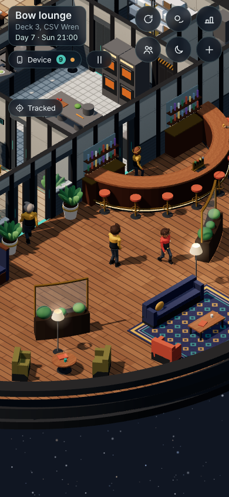

Crossing the Line: the plan
claude/event-plan-line, from build 0.64.6. Planning only: the game hasn't changed. The first ship-wide event in the story, built after the ion storm. Your answers go in section 8.- Sunday Day 7, your second day off, so Saturday stays completely free. The Wren crosses into the Veyli reach. One day, no score, nothing breaks.
- 14:30: the horn (a gold pulse through every light: the game has no sound), the hull lights turn gold until the supper ends, and the Captain's short address. She's off that day, is called in, and jokes about it.
- 14:30-15:15, the bow lounge (your call): about 50-60 crew, because the day shift stands easy for the ceremony. You stand at the front with the other first-timers. The Captain reads the old oath, you answer it for the first-timers, and your words go on Monday's plaque. Then everyone drinks Brennan's famously awful green Line punch.
- The story: Tomas, your bunkmate, is the other newest hand, and he's on watch through the whole crossing. He misses his own Line. You can take him a mug, and that night the crew give him his crossing on Lap of the Wren.
- 18:00-19:15, the mess: the Line supper takes the Sunday table's place: the dish the crew voted for, plus Brennan's pudding. Up to about 60.
- Monday: the plaque with your words, your Line certificate on your shelf, and the crew retelling it all.
- About 6 build turns, switched off until you've reviewed it. 8 questions for you, each with a recommended answer (section 8). You've already chosen the story.
The story
Each option has a beginning, a middle where your one choice matters, and a payoff. All three use crew already aboard, and none touches the later chapters of anyone's personal story.
A. "The one on watch" (your choice, 01:30)
It comes straight from the ship's rota. Tomas, your bunkmate, arrived just before you, and on Sunday he's on watch on Deck 2 from 08:51 to 17:00. Someone has to watch the ship as she crosses, so he'll miss his own Line.
- Saturday evening, wherever he is. Tomas spends it in the mess and the garden, then climbing on the rec deck, then bed at about 22:45. The moment finds him wherever you meet him, or at his bedtime in Bunk 1. He can't settle: "I'm on watch tomorrow. All day. My first Line, and I'll be watching a corridor screen." You can:
- promise to bring him some punch;
- promise to tell him every bit of it;
- ask why he can't swap ("Not on a crossing. Someone has to watch her cross.").
- Sunday, 14:40, the bow lounge. After the oath the Captain asks, "Who answers for the first-timers?" Two first-timers look at you. Your one choice is the answer, and it goes on the plaque:
- "We came a long way. We're glad we did."
- "We crossed together, all of us, even the ones on watch."
- "Is this the part with the punch?" The crowd laughs, and the Captain says: "It is. I'm so sorry."
- After the ceremony (optional). Take a mug of punch up to Tomas at his post on Deck 2. Tomas: "You brought it up. Nobody brings things to the watch." If you don't, nothing bad happens: Brennan saves him one.
- Sunday 20:30, Lap of the Wren. Tomas, off shift now, walks at the front. Where the walk turns at the lounge doorway, by the plaque, the old hands stop and give him the oath's last line: "From today, this reach knows your name, Lind." Zeke says it, and Pell hands him the last of the punch. What Tomas says to you depends on your day:
- if you named the watch: "You said 'the ones on watch'. Deck 2 heard about it in five minutes."
- if you brought the mug: he raises it;
- if you did neither: "Next Line, you're on watch and I'm drinking the punch."
- Small threads around it. At One week aboard (17:15), Zeke owns up to pulling the worst face at his own first Line. At the supper someone guesses what's in the punch, and you can keep Brennan's secret or not.
- Monday. The plaque carries your words under the date, and the crew quote them back.
- If you miss the ceremony, a first-timer answers with the plain line ("We're new, and we're nervous, and we came anyway."), and that goes on the plaque. You can still take Tomas his mug and walk the Lap.
- No spoilers (checked with the writer): Tomas only talks about missing the ceremony, nothing from the later chapters of his story. Chief Holt gets one line on Saturday, about the here and now ("Crossing or no crossing, the lounge stays tidy."), and nothing about borders or the past, which belong to his own story later. There's nothing about the visit.
- It changes one thing you agreed earlier: the single reply at the oath was to be proud, nervous or joking. A keeps the proud and the joking answers, swaps "nervous" for "even the ones on watch", and puts your answer on the plaque.
- Cost: about one more turn, and about 30-35 new lines from the writer.
A2. The same, but Tomas comes to the ceremony (not chosen)
- Saturday: the same evening moment, but his worry is standing up in front of everyone, not missing it.
- Sunday 14:40: the Captain sends for him ("I asked the watch to spare you for ten minutes"). A Watch hand walks across to cover his post, Tomas comes down, and he stands beside you in the front row. The answers become proud, "We'll answer together", and the punch joke. It still goes on the plaque.
- Monday: the plaque, and Tomas's thanks.
- The trade-off: nothing to miss, so the mug run and his crossing on the evening walk lose their reason (the walk is just the usual one). The story is smaller: his nerves and your answer. It's also a little harder to build, because someone on shift has to be brought to the ceremony and sent back, with his post covered.
B. "What's in the punch?" (not chosen)
- Sunday morning: carrying the punch up, Brennan tells you one ingredient and swears you to secrecy.
- All afternoon: the crew try to get it out of you. At the supper you keep the secret, tell everyone, or make up something worse.
- Monday: the guesses go round.
- Weaker: funny, but it's only Brennan's story, and the oath isn't part of it. (In A it's a small side thread.)
C. "The Line roll" (not chosen)
- Saturday: Commander Vance asks you to bring the Wren's Line roll up from stores. Every first-timer since she launched has signed it.
- The ceremony: each first-timer signs it, and you choose the line beside your name.
- Monday: the roll hangs by the plaque.
- Weaker: quiet, and nobody else's story is in it.
You chose A (in chat, 01:30). Why it was recommended: it's true to the ship's own rota, a friend wants something he can't have, your answer goes on the plaque in front of everyone, it pays off the same evening, and it still works if you miss the ceremony.
Crew react within about 5 ship minutes of the horn, so the first things they say are about the gold pulse, the gold windows and the walk to the lounge ("Did you feel that? The whole deck went gold."). Talk about the punch and your answer waits until the ceremony is over at 15:15.
1. The day at a glance
Sunday Day 7, from 08:00 to 22:00. Grey is what already happens; gold is the event; teal is up to you. Scroll sideways on a phone.
Saturday Day 6: nothing changes in the day. At 18:00 Vance's Mail arrives, and the crew start asking "First crossing?"; that evening, Tomas. Monday Day 8: the plaque, the certificate and the talk. The event ends at midnight.
2. Minute by minute
| When | What happens | Where |
|---|---|---|
| Fri 5, 16:00 | The Captain's first weekly address mentions Sunday's crossing. | Rec deck auditorium |
| Sat 6, 18:00 | The warning. Vance's Mail: "Tomorrow at 14:30 the Wren crosses into the Veyli reach... Attendance is not required. It is, however, expected." Crew start asking "First crossing?". Pell crossed two years ago and has opinions about the punch. | Mail; every deck |
| Sat 6, 19:00-22:45 | The story begins: Tomas, on watch tomorrow (a moment wherever you meet him, or at his bedtime; else his Mail at about 22:50). | Wherever he is |
| Sun 7, 10:30-12:30 | The swap meet, as usual. | Promenade and plaza |
| 12:45-14:15 | Two small volunteer jobs on the mess sign-up sheet, and Brennan asks too (question 8): carry the punch to the lounge; hang the gold ribbons. | Galley; bow lounge |
| 14:15 | A gentle note on your device, with "show on map": the ceremony in the bow lounge at 14:30. | Your device |
| 14:30 | The crossing. The horn (question 3): every light pulses gold once and the crew stop and look up. The hull lights turn gold (question 2). The Captain's banner: "This is the Captain. I'm off today, so I'll be brief. We've crossed the Line." The day shift stands easy until 15:15, except the bridge, the watch and the galley line (question 7). | Every deck |
| 14:30-14:40 | The crowd gathers: the Captain at the window end with the stars behind her, Brennan with the punch bowl, the first-timers nearest her (question 5), everyone else behind; any overflow at the doorway. The Envoy stays away, by courtesy. | Plaza |
| 14:40-14:55 | The oath, then "Who answers for the first-timers?" Your answer goes on Monday's plaque. | Bow lounge |
| 14:55-15:15 | The "dunking": a mug of Line punch each. Mugs out, faces pulled. | Bow lounge |
| 15:15 | The ceremony ends. Brennan's Mail: the Line supper at six, and a pudding. No punch. Your certificate is on your shelf. | Mail; your cabin |
| 15:15-17:00 | If you like: a mug of punch up to Tomas at his post. | Deck 2, lift lobby |
| 16:00-17:00 | The reading corner, as usual. | Bow lounge |
| 17:15-17:55 | One week aboard with Zeke, as built, plus lines about your crossing, and Zeke's worst face at his own first Line. | Bow lounge |
| 18:00-19:15 | The Line supper (question 4): the Sunday table re-dressed. The crew's voted dish (fish and chips, in a new game) and a pudding. Up to about 60. Someone guesses what's in the punch. | Mess hall |
| 19:15 | The gold fades back to normal over a minute. The plaque goes up overnight. | Every deck |
| 20:30-21:15 | Lap of the Wren, with Tomas at the front. At the lounge doorway, by the plaque, the old hands give him his crossing. | Promenade |
| Mon 8 | The afterglow: the plaque quoted back, the worst face retold, and the device's status line, "First day in the Veyli reach." | Every deck |
3. The bow lounge during the ceremony
You asked for the ceremony in the lounge (01:42), so it's there. The places are already built (for the storm's party): 61 standing spots and 34 seats, 95 places, so the 50-60 people expected all fit. Anyone over spills onto the promenade and plaza by the doorway, where they can still see in. The bar stays as it is.
- The Captain stands right at the bow glass, facing the room, with the bow windows, the stars and the gold hull lights behind her. Brennan and the punch bowl are on one side of her, and the two first-timers who speak on the other. The crowd fills in nearest her first, so the first-timers are at the front. Nobody stands between her and the windows, so the ceremony uses 52 of the 61 standing spots, plus the 34 seats: 86 places.
- The plaque goes in the lounge, on the wall by the doorway from the promenade, where everyone passes.
- One week aboard with Zeke at 17:15 is in the lounge too, and doesn't clash. The ceremony is over at 15:15, and the punch bowl and ribbons are cleared then, so the room is back to normal for the reading corner at 16:00. Zeke's toast now happens in the room where you crossed.
- Tomas's crossing on Lap of the Wren: the walk loops the promenade and turns right at the lounge doorway. The old hands stop there, at the plaque, instead of on the plaza, and the route doesn't change.
- On a phone, the lounge drew 284-302 draw calls on Day 7 against a budget of 450, and the storm's party there peaked at 367 with 64 crew. The ceremony adds about 4.

The supper stays in the mess: 44 seats and 22 standing spots, spilling onto the plaza, so up to about 60 fit there too.
4. What you can do
- Saturday night: keep Tomas company; promise him punch.
- Help if you like: carry the punch (and hear one of its secrets), hang the ribbons. Never scored.
- Answer the oath for the first-timers; your words go on the plaque.
- Take Tomas a mug at his post on Deck 2.
- Eat at the Line supper; keep Brennan's secret, or don't.
- Walk the Lap at 20:30 and see Tomas get his crossing.
- Miss any of it and still be part of it (question 6): the gist by Mail, the certificate anyway, and Brennan saves you a mug at supper.
- No commendation comes from this event, even if you do both jobs. It isn't that kind of event.
5. Who's there
- About 76 people are aboard on Day 7: 74 crew, plus the Veyli Envoy and Ulla Jaramillo, the touring musician. 45 crew work that day.
- The Captain is off and called in (her lines and the crew's chatter say so). She reads the oath.
- Brennan works Sundays: she brings the punch, then cooks the supper with Lukas Dlamini.
- Tomas is on watch, 08:51-17:00, so he misses the ceremony (the story).
- Commander Vance works, and stays on the bridge. Calder, Sato and Holt are off; they come if they like.
- The first-timers (question 5): the writer adds a fact, "the Wren was last in the reach two years ago, on a quiet charting run". Everyone aboard less than two years is crossing for the first time: 21 crew, about 8 of them off at 14:30, more if the day shift stands easy. Pell has been aboard two years exactly, and remembers the punch.
- The Envoy stays away from the ceremony by courtesy (a Veyli doesn't watch another people's rite) but comes to the supper as they do every Sunday. Ulla comes like anyone off duty.
- Nothing about the visit.
6. How it gets built
After the ion storm, which switches the events base on. Each turn: small edits in the right seats, the area's checks, then the quick check; the switch EV_LINE_ON stays off (the game identical) until you've played it and agreed.
| Turn | What | Sections (owners) | Checks |
|---|---|---|---|
| L1 | The event itself: phases, the address, the Mails, chatter, status lines; the first-timers; the oath scene with your answer; the Captain's one scene that day; the writer's lines baked. | 18 (traditions), 22 (writers' lines) | events_check, bigevents_check on paper, lines_check, social_check |
| L2 | The crowds: the ceremony (the Envoy left out on purpose), the day shift standing easy, the Sunday table and the Lap re-dressed for the day, the galley's pudding, three spots beside the Captain. Waits until the base brings named people to their scenes. | 18, 14 (sim), 16 (galley), 4d (deck architect) | day_check Days 6-8, food_check Day 7, bigevents_check crowds (draw calls at phone size) |
| L3 | The look: the gold hull lights, the horn's gold pulse, ribbons, the punch bowl, the plaque with your words, your certificate (it moves with you when you get the officer's cabin on Day 10). | 8b (performance), 4d (deck architect) | deck_check, perf_check, phone screenshots |
| L4 | The story's moments: Saturday evening with Tomas, the mug at his post, the Lap, Tomas's and Zeke's lines, the punch secret. | 20c (social), 18 | social_check, events_check, bigevents_check live |
| L5 | Your part: the two jobs, the Schedule and status line, the Record line, missing it. | 17 (systems), 19 (device), 18 | player_check, device_check, interactions_check, devmode_check, the arrival-week check alone |
| L6 | Switched on after your review, then the full round of checks. | 18 | everything |
About 6 turns (the events plan said 4-5; the story adds about one). Then a second adversarial review of the build, then your review. Draw calls on Day 7 at phone size measured 240-256 against a budget of 450; the new look adds about 4-5.
For the builders: the details
- Phases (event day 0 = Saturday Day 6):
warning [0, 1080],onset [1, 870],resolution [1, 915],afterglow [1, 1155](clears),days: 3.eventDayis true on Day 7 only. No phase pauses a tradition. - Off = identical:
SHIP_EVENTS.crossingLine, its gathering, theEV_DAY_DRESSrows and the three lead spots go in only whenEV_LINE_ON. - Standing easy:
routines.onsetgets{ who: 'all', rule: 'standEasy', at: [870, 915], not: ['dept:command', 'dept:helm', 'dept:watch', 'galley-line'] }, a new rule in section 14 (the sim seat's review), pure from the event's data and the rota.galley-line= the galley crew cooking 14:30-15:15; Brennan is in the ceremony's cast. "About 50-60" is an estimate the day check confirms (45 or more is fine). - The re-dress:
EV_DAY_DRESSin section 18, made at load fromEV_CALENDARand the event's data only, read byeventsOn(d). The Sunday table keeps k 440,ties.galleyanddecor: longTables. Its name, words, window (18:00-19:15, no jitter) and pull change, and its Saturday Mail is left out. Lap of the Wren gets Tomas at the front and a stop at the lounge doorway. - The ceremony: gathering
lineCeremony(k 353, venue 'bow-lounge-line' (only with the switch on: the lounge's tiles, its focus at the window end, four lead spots),not: ['saruth']); meetingcrossingCeremonyat 14:40, who['marrow', 'brennan', 'first:2']; the choice setsline.answer, which the plaque reads. - First-timers:
lineFirst, rostersinceunder two years, made at load, neverR(), never a guest. - Hash keys: 340 party, 341 one-offs, 351 farewell, 352 the storm's lantern supper (reserved), 353 the ceremony, 354 kept for this event, 355 up the comet, 440 the Sunday table (unchanged).
- No score: no threads,
commend: false, no debrief, no band words. - Needed first:
- the storm update;
- EV1's F0b (called in, and named people brought to an event's meetings), F2b, F3 and F4;
- EC1's
bigevents_check.py; - patch E's
MUG_ON; - the Fridays plan's
SHORT_FRIDAY(for Friday's mention).
- The full markdown plan (
plans/event-line-plan.md) has the line list for the writer, the risks, and how each of the reviewer's fixes was taken.
7. Risks
- The base's gap: today nobody is actually placed into an event's scene. Until that's fixed, the Captain and Brennan wouldn't be in the lounge. The crowd turn waits for it.
- Standing easy is a new rule in how the crew plan their day; the sim owner reviews it, and the day check counts the crowd.
- Re-dressing the Sunday table and the Lap touches the galley's Sunday dinner and a crew tradition; the food check and the owners' review cover it.
- It's still the arrival week, so the arrival-week check runs alone.
- Your certificate must follow you to the officer's cabin on Day 10.
- The gold must read as festive, not alarming (the storm turns the windows violet). Phone screenshots before you see it.
- Tomas's day must go as planned: at his post until 17:00 (reachable for the mug), and on the Lap at 20:30. The events check shows both.
8. Your answers
Pick one option per question (the recommended one is marked), and add a comment if you like. Questions 5 and 7 are new versions, rewritten with the reviewer's true numbers.
9. Judgement calls (tell me if any is wrong)
- No tradition is paused for the event. Two are re-dressed for the day: the Sunday table becomes the Line supper, and Lap of the Wren becomes Tomas's crossing. Everything else runs as usual.
- The plaque goes in the lounge, by its doorway; the certificate on your shelf.
- The ceremony counts as the Captain's one scene that day. She walks the Lap that evening as one of the crowd, with no line.
- No Veyli at the ceremony and nothing of the visit.
- The oath stays as the writer wrote it:
"We have crossed the Line. We left the near stars behind us, and we did not go alone. Whatever is out here, we meet it as one crew, and we bring each other home. From today, this reach knows our names."